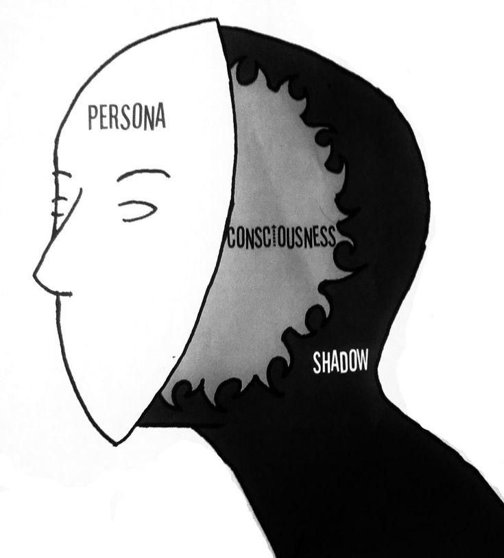

Why This Exists
“Who looks outside, dreams; who looks inside, awakes.” – Carl Jung
This isn’t a portfolio. This isn’t even a website. It’s a ritual. A mirror. A slow exhale carved into code. Every word here was written in silence, rewritten in pain, and designed with stillness.
I built Inner Depths as a space to explore philosophy, psychology, and the shadows within. Each page reflects a stage in personal integration. I am not an expert. I am not a guru. I am a seeker — just like you.
If these words meant anything to you, then perhaps it wasn’t just about me. Perhaps some forgotten part of you came to the surface. Welcome back.